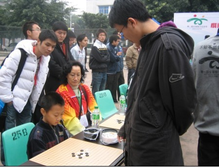

别怪我花心（四）
#1 别怪我花心（四） 作者：茗弈宽容 发表时间：2010-4-21 16:08:20
我的第四朵金花，我和他是蛮有缘分的。去年智运博览会，随同弟弟解村去打车轮战，他一人对20人，场面颇壮观。而最吸引眼球的是一个前来参赛的小朋友，他看上去只有7，8岁，父母陪着一起来的。令我吃惊的是他的沉着，一般的小朋友估计在这样的场合会给父母撒娇，或思想不集中等。但他目不转睛，全神贯注在棋盘上，那份镇定与自如的神情，深深吸引并打动了我。

我和一旁他的父母拉上了话题，他母亲告诉我，娃娃叫杨乐，一直喜欢下五子棋，但没正规学过。他家就住在当地，这是孩子第一次参加这类全国性质的比赛，很高兴有机会锻炼下。由于都是四川人，我们聊得也比较投机。最后孩子输了，但我看了他的棋，觉得很有潜力。比赛后，我把那盘棋和他复盘，并给他讲解了哪些地方不太好，孩子认真听着，忽闪着睿智的眼睛。孩子母亲对我表示感谢，并提出以后让杨乐跟我学五子棋。
乐乐，是个很内向的男孩。在上课时，我常中途反复问他某个问题，而那边没有回答。我很无奈，大声说：“杨乐，还在不在？”“嗯”那边传来细细的声音。曾几度由于他总不爱和我交流，我很郁闷。我告诉乐乐妈妈：孩子现在最关键的问题是改变性格，一定要刻意培养他与人交流的能力。乐乐妈妈也一直被他这个问题困扰着，但这是孩子目前最大的问题，孩子妈妈应允着想办法改变他。
而事实并没有朝着我们想像的方向发展。一次在讲一个棋的时候，我告诉了他正确的应该怎么下，而他却偏不听我的，走其它的点。我很生气，很灰心了。而我父亲一直在旁边看着这一幕。下课后我告诉爸爸，我不想再教这个学生了。爸爸语重心长对我说：“毫无疑问，这个孩子目前必须改变不与你沟通这一点。但是，你不应该放弃，从另一个方面来说，这个孩子是个难得的人才，他有自己独立的思考不是吗？”爸爸以前是学校的校长，听他这么一说我顿时茅塞顿开。
我的乐乐，他有几分内向，几分倔强，但这正是他的魅力和个性。现在乐乐和我慢慢熟悉了，话也多起来了。知道这次嘉炜和大卫要去参加全团，乐乐也想去。但乐乐妈考虑到太远了，不方便，只能作罢。但妈妈和孩子告诉我：以后近点的地方有比赛，一定通知他们。乐乐，宝贝加油！
［ wsmwy 于 2010-4-21 16:58:21 时花20金币送鲜花一朵］
#2 Re:别怪我花心（四） 作者：茗奕的飞猪 发表时间：2010-4-21 16:55:01
不错，加油！#3 Re:别怪我花心（四） 作者：梦在哪 发表时间：2010-4-21 16:56:29
刀姐教棋很有耐心了，注意身体好好保重自己。#4 Re:别怪我花心（四） 作者：梦在哪 发表时间：2010-4-21 16:57:01
 怎么送不了花呢？
怎么送不了花呢？
#5 Re:别怪我花心（四） 作者：wsmwy 发表时间：2010-4-21 16:58:57
顶起，朱小姐加油！
#6 Re:别怪我花心（四） 作者：wrwak 发表时间：2010-4-21 17:00:34
内向？ 没前途